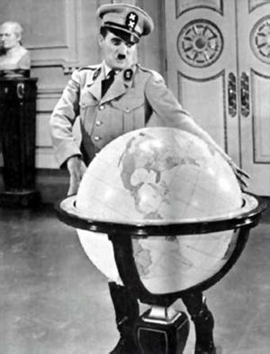
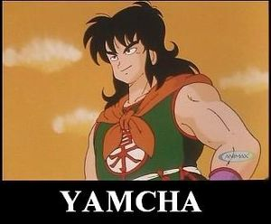

Mimo
 De: La Frikipedia, la enciclopedia extremadamente seria.
De: La Frikipedia, la enciclopedia extremadamente seria.
| De la serie animales y otros bichejos:
|
|
|
| Nombre común:
|
Mimo
|
| Nombre científico:
|
Mimidus estipiditus
|
| Especie:
|
Tonto
|
| Subespecie:
|
Sub-tonto
|
| Alimentación:
|
Comida de mimos
|
| Apariencia:
|
Parece un ser humano con apariencia … de mimo
|
| Hábitat natural:
|
Todos los lados que piensas y los que no tambien
|
| Localización:
|
Una parte del mundo , la que tiene tierra
|
| Número aproximado de ejemplares:
|
millones de millares de trillones
|
| Fecha de extinción:
|
Cuando acaben con el ultimo ser humano
|
| Pokemonización:
|
Se convierte en ti después de matarte
|
A continuación les traigo un articulo , para incrementar el saber inminente y omnipotente de cultura frikipedistika, sobre un ser odiado por todos , pero comprendido por nadie. No hermano no me refiero a IP anónima por lástima si no a:”Los Mimos”
«Los mimos me dan miedo»
~ Una niña que odia los mimos expresando su miedo
«........................»
~ Mimo Detras de la niña
«¡Aaaaaaaaaaahg!»
~ La misma niña Mirando hacia atras
El mimo
 Una imegen de algo como un mimo
y no encontre otra por que no puedo subir fotos Los mimos (en español-castellano de España-americalatina), mime(In Inglish), うぇえぉおかがきぎ (en el idioma del anime), il mimo(el idioma de las pizzas).
Es una sub-mutación o intento macabro, era un prototipo para una multi-mundial empresa de hamburguesas con el logo de un payaso , ya que este ser seria ocupado para invitar a los niños mudos a ser obesos y mudos, el experimento salio fuera de control y se joden que no les salio pintado. También se cree que el primer mimo fue Charles Chaplin.
Hábitat de un mimo
Al principio de los tiempos se creía que dominaban la tierra junto con los dinosaurios y los picapiedras, pero eso es totalmente fake(falso para los no-bilingües).
Estos habitan en jaulas especializadas llamadas Circos, junto a la mujer barbuda y sus archi-requetecontra-enemigos los payasos, pero fueron desterrados por los hombres bala.
Actualmente se les ve solitarios nunca en atacan en manada, y se les puede encontrar en cualquier centro peatonal en tu ciudad así que cuidado (se están reproduciendo para recobrar lo que es suyo…)
Como reconocer a un mimo
- Los mimos , no suelen hacer ruido así que si escuchas esto: …………. Es que hay uno detrás de ti ( O yhea!!)
- Suelen verse como en pelis blanco y negro.
- Si algún idiota te imita es mimo
y de seguro idiota por imitarte a ti
- Nunca se rinden solo se detienen cuando les das tu dinero
- Algunos cientificos dicen que no hablan , así que el que no te hable por la calle , ese es mimo
- Suelen ser como payasos pero son mas fomes que un articulo de Wikipedia
- No los busques ellos te buscan a ti.
- No saben leer , asi que este articulo esta a salvo
Como acabar con un mimo
Seguramente te has encontrado con uno seguro te ha violado y vienes a por mas, si no es así, Diox te libre
Pero la pregunta es: ¿Cómo rayos me libro de un mimo sin morir en el intento?
- Intento num. 1: Pégate un golpe en los huevos con todo tu ki o en defecto chakra.
El mimo por un acto de naturaleza te imitara y se golpeara (pero tu igual sentirás dolor así que esto no va)
- Intento num. 2: Finge que no eres tuú. Recuerda el mimo solo te imitara a ti y si eres otro pues te lo jodes
- Intento num. 3: Hazte el muerto. En cuanto el mimo te imite tirandose al piso corre!!!
- Intento num. 4: Haz el intento num. 4. Siempre funciona
- Intento num. 5: Abre tus piernas en 45 grados. En cuanto el mimo haga lo mismo que tu , patá en los cojones
- Intento num. 6: Viaja en el tiempo y eliminate para nunca encontrarte con un mimo. De seguro nunca sufrirás
- Intento num. 7: Se su amigo e interactúa con el. La psicología inversa SIEMPRE funciona (a menos que el mimo se la crea)
- Intento num. 8: Pinta su cara de colores. Perderá todo su poder y se convertirá en un humano normal. Contra: Si eres hombre llevas pinturitas?, si es así, es tu vida y tu eres libre de hacer lo qué quieras con tu cuerpo.
- Intento num. 9: Finge ser mimo. Un mimo no puede imitar a un mimo eso seria, eh… e…
- Intento num. 10: Manda a hacer una polera con el signo anti-mimo. Reconocerá el signo y se vira. Contra: No existe este símbolo
- Intento num. 11: Ocupa el espanta mimo non jutso. Técnica milenaria para espantar mimos una vez aparecida en Rellenuto
- Intento num. 12: No lo uses es de mala suerte. Los mimos son muy superticiosos
- Intento num. 13: Lleva un espejo contigo. Los mimos no tiene reflejo y no te servirá.
- Intento num. 14: Haz un kage bushin no jutso. Con varias copias tuyas el mimo no sabrá que hacer
- Intento num. 15: Rindete. El mimo se ira ya que busca un reto.
- Intento num. 16: Dile al mimo que se valla. Hazlo con buenas palabras y muy amable y de seguro se ira (nunca funciona de buena forma). Contra: Este plan no existe.
 Yamcha planeando acabar con un mimo
Mimos Famosos del mundo
- Marcel Marceau: si el mismo no lo puedo creer
- Ese que decía mala idea y buena idea en un cartoon de WB.
- Tu vecino que nunca habla
- Y uno que otro
¿Sabías que...
- ...los mimos no hablan por que son la raza mas sabia del mundo y su parlar destruiria nuestras pequeñas mentes?
- ...Ip anonima es una especie de mimo por que nunca habla?
- ...Dios los creo a su semejanza?
- ...Solo los payasos que llegan al Nirvana llegan a ser mimos?
- ...Cuando hable el primer mimo el 2012 sera nuestro fin?
- ...todos los mimos van al cielo?
- ...los mimos escribieron todos los artículos de Wikipedia?
- ...los Eva de Evangelion no hablan por que son mimos?
- ...se pintan la cara con
leche de perro tiza?
- ...si los mimos son tontos que hay de los titeres?
Autor(es):
- Khazike Khashondo
- Veni Vidi Vici
- Dark temptation
- Ricardoxxxlo
- Francisko x
- Amenatorado
Frikipedia 2005-2016, Licencia
GFDL 1.2 - Extraído por FrikiLeaks